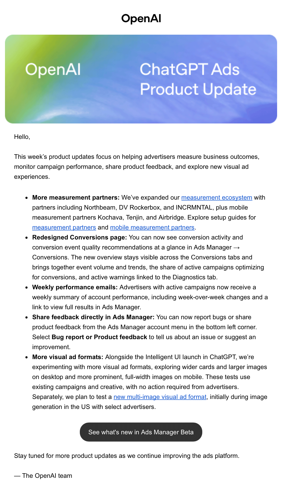
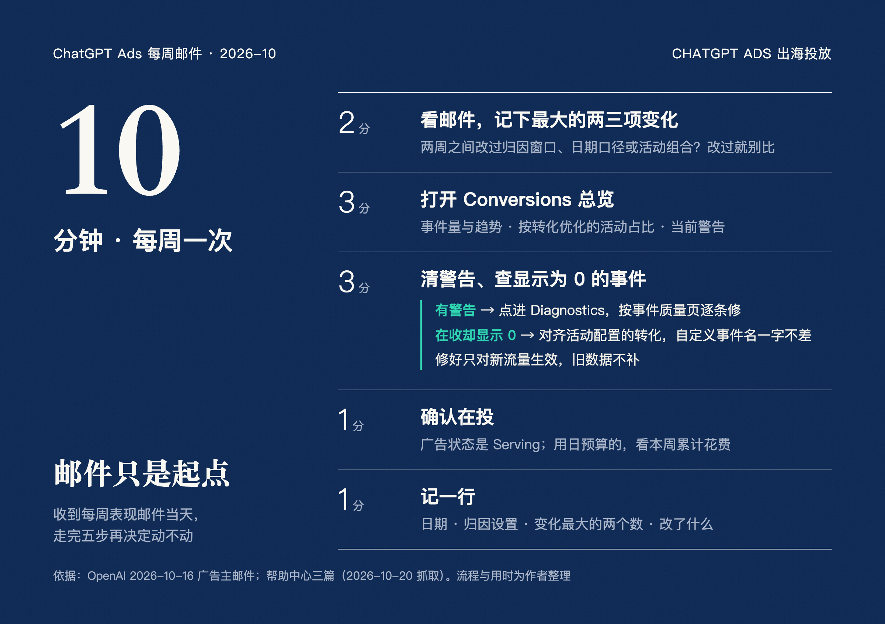

三句话版
ChatGPT Ads 的每周邮件是提醒你去看，不是可以直接转发的结论。收到后先花十分钟进后台，再决定动不动。
上周第二篇讲了归因窗口和事件质量分。这周 OpenAI 加了每周都会看到这两样东西的地方：10 月 16 日它给广告主发了一封更新邮件，内容是 Conversions 页改版、每周表现邮件、后台内的反馈入口。本文只用这封邮件和 10 月 20 日抓取的帮助中心原文，不用我们自己账户的数字。
已在投的，看完有一套收到邮件当天就能跑的流程；准备投的，知道头几周后台应该是什么样。

邮件里有五项，其中三项改变你每周要做的事：
另外两项：测量伙伴新增 Northbeam、DV Rockerbox、INCRMNTAL，移动测量伙伴新增 Kochava、Tenjin、Airbridge；以及更大图的视觉广告形式测试。官方说视觉测试"use existing campaigns and creative, with no action required from advertisers"，不用你动。
周环比是两个数字之间的事实。下面三件事能让这两个数变，而市场本身没变：
所以邮件里看到大起大落，第一个问题是：两周是不是按同一套规则量的。
OpenAI 没有发布每周流程。下面是我按邮件和帮助中心整理的，时间只是参考。

1. 看邮件（2 分钟）。 记下周环比变化最大的两三项。问一句：两周之间归因窗口、日期口径、活动组合有没有变？变了就别比，记一笔。
2. 打开 Conversions 总览（3 分钟）。 后台 → Conversions，看邮件里说总览上有的三样：
3. 清警告、查零（3 分钟，或转给技术同事）。 常见两种情况：
4. 确认在投（1 分钟）。 广告状态是 Serving。用日预算的，再看本周累计花费。排障文档原话："Using the weekly allowance early can stop delivery later in the week." 前几天花太快，后半周会停。
5. 记一行（1 分钟）。 日期、归因设置、变化最大的两个数、你改了什么。下周的邮件只有对着这一行才看得懂。
后台现在有两条路，管的事不一样：
官方列了报表问题要带的材料：广告账户 ID、活动和广告名、日期范围和时区、后台导出的 CSV、你的分析工具对照。转化问题再加事件名和几条转化时间样例。不要发 API key。
如果问题不止一个活动，官方请你直接说明，并给几个具体例子。
OpenAI 给 ChatGPT 和 Codex 出的 Ads Manager 插件可以替你做每周复盘。帮助中心原话：可以"schedule daily or weekly reviews"，复盘给证据和下一步，但"never change your account"。
两个限制要知道：默认看账户时区下过去七个完整日；原始事件诊断只看最近 15 分钟的 50 条，是现场测试，不是历史报表。它也拿不到转化金额，所以不报收入和 ROAS。
插件能替你做第 1 步，替不了第 5 步。改了什么、为什么改，还是得有人记下来。
每周邮件不是可以直接转发的报表。 它是摘要，最近几天不完整，也不显示数字是按什么设置算的。
有警告不等于活动坏了。 它指的是你回传的数据。先确认真实动作有没有被记录，再动设置。
按转化优化的活动越多越好，不成立。 总览里的占比应该和你的计划一致。转化信号不够的活动，换个目标可能跑得更好。这条是我的判断，不是官方说法。
已在投的，这周开始：
准备投的： 有在投活动才会收到邮件。上线前把像素和 Conversions API 装好、共用事件 ID，流量进来前把正确的转化挂到每个活动上。这样第一封邮件反映的是真实设置，不是漏洞。
观望的： 现在不用动。只需知道 ChatGPT Ads 现在每周会给你报一次数，开始投时把体检流程和活动一起规划。
会。2026 年 10 月中起，有在投活动的广告主每周收到账户表现摘要，含周环比变化和跳到后台完整结果的链接。
按官方说法：事件量和趋势、在投活动中按转化优化的占比、链接到 Diagnostics 页的当前警告。总览在 Conversions 各个标签页都可见。
先查三样：最近 24–48 小时的数还在处理、两周的归因窗口是否一致、转化默认按广告互动日记。三样都一致，变化才是真实的。
通常是你发的事件和活动配置的转化不匹配，自定义事件名必须完全一致。修好只对新流量生效，历史数据不会补回。
后台左下角账户菜单选 Bug report 或 Product feedback。账户或报表问题发 ads-support@openai.com，附账户 ID、活动名、日期范围、时区和 CSV 导出。
能。可设每日或每周的复盘，只给建议，不改账户，默认看过去七个完整日。
Stan Lu（鲁丙敖）· ChatGPT Ads 出海投放。写 ChatGPT 广告官方更新的中文解读，只用官方原文、报道、推断三栏出处。
栏目：ChatGPT Ads 更新解读 · 上一篇：归因窗口与事件质量分 · English
发布 2026-10-29 · 最后更新：2026-10-29